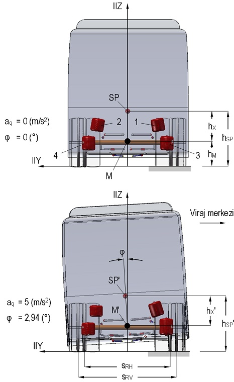

|
3. Stabilizatör çapýnýn hesaplanmasý
Stabilizatör çapý, bacak yataklarýna indirgenmiþ yay katsayýsý cS' üzerinden, Þekil 14'te görülen temel boyutlar üzerinden hesaplanmýþtýr. Bu boyutlar, gövde iskeleti elemanlarý ve aks yapý elemanlarýnýn Þekil 2'de görülen konumlarý dikkate alýnarak belirlenmiþtir. Uygulamada, stabilizatörler genellikle aksa ve gövdeye H-H' ve F-F' noktalarýndan elastik elemanlar yardýmýyla yataklanmaktadýr. Viraj hareketi sýrasýnda bu elemanlarýn þekil deðiþimi ne kadar fazla olursa, bacaklarýn elastik þekil deðiþimi de o ölçüde azalmaktadýr.
Þekil 14. Stabilizatör boyutlarý
Bu da stabilizatörün burulma direnç momenti oluþturma kapasitesinden tam olarak yararlanýlamamasý anlamýna gelir. Dolayýsýyla, istenen stabilizatör katsayýsýnýn elde edilebilmesi için ilk hesaplanan cS' deðerinin, düzeltme faktörü bg ile birlikte deðerlendirilerek belirli oranda artýrýlmasý gerekir. Yatak elastisitesi dikkate alýnarak hesaplanan yeni stabilizatör katsayýsý cS;
(16)
þeklinde bulunmaktadýr. bg Düzeltme faktörü, çeþitli yataklama tipleri için ilgili literatürden elde edilebilmektedir. Þekil 14'te görülen yataklama düzeni için bg= 0,86 alýnmasý önerilmektedir [1,14]. Stabilizatör çapý d0, elde edilen yeni katsayý ve parça boyutlarý üzerinden;
(17)
baðýntýsý uyarýnca, d0= 50 mm olarak hesaplanmýþtýr [1, 14]. Bulunan bu deðere göre CATIA® V5R15 paketi yardýmýyla oluþturulmuþ katý model Þekil 15'te görülmektedir.
Þekil 15. Stabilizatörün katý modeli
4. GERÝLME ANALÝZÝ
Çapý belirlenen stabilizatörün mukavemet analizi, taþýtýn tutunma sýnýrlarýnda yapacaðý varsayýlan bir viraj dönüþü sýrasýnda, bacaklarda ortaya çýkacak þekil deðiþimi üzerinden gerçekleþtirilmiþtir. Yol-tekerlek arasý yan kuvvet baðýntý katsayýsýnýn ortalama, µS 0,5 kabul edilmesi durumunda taþýt, aq 5 m/s^2 gibi oldukça yüksek bir yanal ivmede savrulma sýnýrýna gelmekte ve bu durumda Þekil 13 üzerinden 0,5 kabul edilmesi durumunda taþýt, aq 5 m/s^2 gibi oldukça yüksek bir yanal ivmede savrulma sýnýrýna gelmekte ve bu durumda Þekil 13 üzerinden  3º olarak bulunmaktadýr. Böylece (15) baðýntýsý yardýmýyla, = 5,46º ve z1= z2= 30 mm deðerleri elde edilmektedir. Þekil 16'da, aq=5(m/s2)'lik yanal ivme için gövdenin YZ düzlemindeki hareketi görülmektedir. 3º olarak bulunmaktadýr. Böylece (15) baðýntýsý yardýmýyla, = 5,46º ve z1= z2= 30 mm deðerleri elde edilmektedir. Þekil 16'da, aq=5(m/s2)'lik yanal ivme için gövdenin YZ düzlemindeki hareketi görülmektedir.

Þekil 16. Taþýt gövdesinin aq: 5 m/s2 yanal ivme için yalpa simülasyonu
Hazýrlanan katý model, gerilme analizinin gerçekleþtirilmesi amacýyla ANSYS® Workbench V11.0 ticari sonlu elemanlar yazýlýmýna aktarýlmýþtýr. Stabilizatörün sonlu elemanlar modeli Þekil 17'de verilmiþtir. Bu modelde her biri üçer doðrusal serbestlik derecesine sahip toplam on düðümden oluþan SOLID187 elemaný kullanýlmýþtýr [15]. Sonlu elemanlar modeli, 74.360 eleman ve 131.971 düðümden oluþmaktadýr. Stabilizatör gövdesi, H-H' ve F-F' yatak elemanlarýyla, bu elemanlar içinde/üzerinde dönebilecek ve Y doðrultusunda sýnýrlý olarak öteleme yapabilecek þekilde iliþkilendirilmiþtir. Bacak yataklarý her üç eksende de serbest býrakýlmýþtýr. Modelde, yatak elemanlarýnýn kauçuk esaslý olduklarý varsayýlmýþtýr. Elemanlarýn elastisite modülü, kauçuk için kabul edilen Emaks= 0,1 GPa ve Poisson oraný, kauçuk esaslý malzemeler için öngörülen v 0,5 deðerleriyle dikkate alýnmýþtýr [16, 17]. Analizde, yataklarýn sýnýrlý þekil deðiþimleri için malzeme özellikleri lineer izotropik olarak tanýmlanmýþtýr.
Þekil 17. Stabilizatörün sonlu elemanlar modeli
Stabilizatörün imalatýnda yüksek zorlanmalara uygun, ýslah edilebilir 50CrV4 (51CrV4) yay çeliðinin kullanýlmasý öngörülmektedir. Bu malzemenin ýslah edilmiþ durumdaki mekanik özellikleri Tablo 3'te verilmiþtir [18].
Tablo 3. 50CrV4 (51CrV4) malzemesinin mekanik özellikleri [18]
Standart |
EN 10 083 |
Malzeme numarasý |
1.8159 |
Elastisite modülü, E |
200 GPa |
Poisson oraný, v |
0,3 |
Akma sýnýrý (en az), Re |
800 MPa |
Çekme dayanýmý (en az), Rm |
1000 MPa |
Analiz için, F ve F' bacak yataklarýna, Þekil 17'de görüldüðü gibi, Z doðrultusunda ve birbirine ters yönde z1= z2 = 30 mm sehim verilmiþtir. Stabilizatör gövdesindeki elastik þekil deðiþimi daðýlýmý Þekil 17'de görüldüðü gibidir.
Þekil 17. Stabilizatör gövdesinde elastik þekil deðiþimi
Yapýlan analiz sonucunda elde edilen gerilme daðýlýmý Þekil 18'de görülmektedir. Buna göre, eþdeðer von Mises gerilmesinin sýrt bölgesinde  = 490-510 MPa aralýðýnda kaldýðý, H ve H' yataklarýnýn bacak tarafýnda ise maksimum maks 606 MPa deðerine kadar yükseldiði belirlenmiþtir. Bu da malzemenin akma sýnýrýnýn %76'sýna tekabül etmektedir. Parça genelinde en düþük emniyet katsayýsý n= 1,32 olarak hesaplanmýþtýr. = 490-510 MPa aralýðýnda kaldýðý, H ve H' yataklarýnýn bacak tarafýnda ise maksimum maks 606 MPa deðerine kadar yükseldiði belirlenmiþtir. Bu da malzemenin akma sýnýrýnýn %76'sýna tekabül etmektedir. Parça genelinde en düþük emniyet katsayýsý n= 1,32 olarak hesaplanmýþtýr.
Þekil 18. aq: 5 m/s2 yanal ivme için stabilizatör gövdesinde gerilme daðýlýmý
Bununla birlikte, Þekil 4 üzerinden görülebileceði gibi, hava yayýnýn belirli bir deðerin üzerindeki sýkýþmasýnda devreye giren lastik takoz, yayýn karakteristiðini önemli ölçüde progresif bir hale getirmekte, bu da akslarýn yalpa direncini artýrmaktadýr. Oluþturulan taþýt modelinde bu durum ihmal edilmiþ ve yay karakteristiði, çalýþma aralýðýnda lineer kabul edilmiþtir. Bu nedenle taþýtýn, aq= 5 m/s2 gibi oldukça yüksek bir yanal ivmeyle gerçekleþtireceði viraj hareketi sýrasýnda ortaya çýkacak yalpa açýsý ile bacak sehiminin, matematik modelden hesaplanan ve simülasyondan elde edilen deðerlerin altýnda olmasý beklenmelidir. Dolayýsýyla, stabilizatörün sýrt bölgesý ve kritik kesitinde ortaya çýkacak gerilmelerde belirli ölçüde azalma öngörülebilir. Bu da, en kritik hareket durumunda emniyet katsayýsýnýn, hesaplanan 1,32 deðerinden daha yüksek olmasý anlamýna gelir. Sonuç olarak parçanýn, öngörülen en yüksek yükleme deðeri için mukavemet koþullarýný saðladýðý söylenebilir.
5. Sonuç
Tasarým aþamasýndaki bir yolcu otobüsünün bilinen teknik verileri ýþýðýnda, süspansiyon sisteminde kullanýlmasý düþünülen stabilizatörün çap hesabý ve mukavemet analizi yapýlmýþtýr. Bunun için önce, yaylandýrma elemaný olarak yalnýzca hava yaylarýnýn kullanýldýðý baþlangýç durumunda eþdeðer burulma yayý yaklaþýmý kullanýlarak, taþýtýn basit bir matematik modeli kurulmuþ ve artan santrfüj ivme deðerleri için gövdenin yalpa eðilimi belirlenmiþtir. Modelde, yalpa açýsýndaki artýþýn, akslarýn yalpa merkezi konumlarýna etkimediði varsayýlmýþtýr. Daha sonra basitleþtirilmiþ bir dinamik simülasyon modeli oluþturularak, karoserinin yalpa ekseni çevresindeki dönme hareketi sýrasýnda, aks ve taþýt gövdesini baðlayan aský kollarýndaki konum deðiþimlerinin yalpaya etkisi araþtýrýlmýþtýr. Her iki modelden oldukça yakýn sonuçlar elde edilmiþtir. Bu nedenle, ilk modelde uygulanan sabit yalpa merkezi kabulünün yeterli bir yaklaþým olduðu söylenebilir. Literatürde önerilen yalpa açýsý sýnýrlamalarýnýn saðlanabilmesi için ön aks konstrüksiyonuna eklenmesi gereken stabilizatörün burulma yay katsayýsý belirlenmiþtir. Bu deðeri verecek stabilizatör çapý hesaplanmýþ ve taþýtýn kritik viraj dönüþü için parçanýn bacak bölgelerinde meydana gelecek sehim miktarý bulunmuþtur. Bu elastik þekil deðiþimi, sonlu elemanlar yöntemi kullanýlarak simüle edilmiþ ve parçanýn gerilme analizi yapýlmýþtýr. Seçilen çapýn mukavemet açýsýndan yeterli olduðu belirlenmiþtir.
Taþýt süspansiyon sistemlerine stabilizatör eklenmesi, viraj hareketi sýrasýnda düþey tekerlek yükü deðiþimini artýracaðýndan, tekerleðin yol düzleminde tahrik/fren kuvveti ve yan kuvvet taþýma kapasitesinin deðiþmesi gündeme gelmektedir. Bu durum, tekerleklerin diyagonal hareketini ve dolayýsýyla taþýtýn özgül yönlenme davranýþýný deðiþtirmekte, doðrultu kontrol ve stabilizasyon özelliklerine doðrudan ve dolaylý olarak etkimektedir [19]. Þekil 19'da, ön ve arka aksýnda stabilizatör bulunan bir taþýtýn viraj dönüþü sýrasýnda, farklý burulma sertlikleri için direksiyon açýsý ihtiyaçlarý karþýlaþtýrýlmýþtýr [20]. Buna göre, ön aks stabilizatörünün arka aksta bulunandan sert olmasý durumunda, taþýtý ayný çaplý virajda tutmak için direksiyon simidine verilen açý, her iki akstaki stabilizatörün eþit sertliðe sahip olmasý durumuna göre artar. Bu da taþýtýn az döner (understeer) karakteristiðe sahip olmasý yani virajýn dýþýna doðru sapma eðilimi taþýmasý anlamýna gelir. Taþýtýn yalnýzca ön aksýna stabilizatör eklenmesi durumunda da özgül yönlenme davranýþýnda belirli ölçüde bir deðiþimin ortaya çýkmasý beklenir. Stabilizatörün mekanik tasarýmýnda takip edilebilecek bir yöntemin açýklanmasý ve gerçek bir aðýr taþýta uygulanmasý ile sýnýrlandýrýlmýþ bu çalýþmada, seçilen katsayýnýn, taþýtýn özgül yönlenme davranýþýna etkisi kapsam dýþýnda tutulmuþtur. Süspansiyon sistemi tasarýmýnda bu noktanýn da gözden uzak tutulmamasý gerekir. Yay ve stabilizatör seçimi yapýldýktan sonra, lastik tekerlek için uygun bir matematik modeli de içeren daha kapsamlý modeller kullanýlarak taþýtýn özgül yönlenme davranýþý deðerlendirilmelidir. Sonuçta, stabilizatör katsayýsý ve çapýnýn belirlenmesi, taþýtýn hem yanal hem de yol düzlemindeki dinamik davranýþlarýnýn bir arada incelendiði bir optimizasyon problemi halini almaktadýr.
Þekil 19. Ön ve arka aks stabilizatör sertliklerinin virajda direksiyon açýsý
ihtiyacýna etkisi (cSV: Ön aks, cSH: Arka aks, µH: Tutunma katsayýsý) [19]
Teþekkür
Yazarlar, katkýlarýndan dolayý, Makine Müh. Gediz Kulaç ve Makine Müh. Hasan Günal'a teþekkür eder.
Kaynakça
- Kuralay NS, 2008. Motorlu Taþýtlar; Temel ve Tasarým Esaslarý, Yapý Elemanlarý, Cilt 1; Tahrik ve Sürüþ Sistemleri, TMMOB Makina Mühendisleri Odasý, Yayýn No: MMO/2008/484, Ýzmir, s.165, 205
- Schiehlen W, 1982. Introduction to Vehicle Dynamics, Dynamics of High - Speed Vehicles, International Centre for Mechanical Sciences, Courses and Lectures, No. 274, Springer - Verlag, Wien - New York, s.3-12
- Blundell M, Harty D, 2004. The Multibody Systems Approach to Vehicle Dynamics, Elsevier Buterworth-Heinemann, Norfolk, s.333, 425
- Continental Luftfederbälge, Firmenschrift, November 1977, s.11
- Pahl HJ, Luftfedern in Nutzfahrzeugen, Auslegung-Berechnung-Praxis, Firmenschrift, Luftfedertechnik (LFT) Germany GmbH / AKTAÞ Group, Dormagen, s.77
- Bastow D, 1990. Car Suspension and Handling, Pentech Press, London, s.53
- Mitschke M, 1972. Dynamik der Kraftfahrzeuge, Springer Verlag, Berlin, s.418
- Milliken WF, Milliken DL, 1995. Race Car Vehicle Dynamics, Society of Automotive Engineering, Inc., Warrendale, PA, s.648
- Genta G, 1997. Motor Vehicle Dynamics, Series on Advances in Mathematics for Applied Sciences-Vol.43, World Scientific Publishing Co. Pte. Ltd., Singapore, s.344
- Matschinsky W, 1968. Die Vierpunktig Geführte Starrachse, ATZ 70, Nr.1, s.9-12
- Reimpell J, 1976. Fahrwerktechnik Bd. 1, Vogel-Verlag, Würzburg, s.164
- Matschinsky W, 2007. Radführungen der Straßenfahrzeuge, 3. aktualisierte und erweiterte Auflage, Springer-Verlag, Berlin Heidelberg, s.101
- v.Estorff HE, Technische Daten Fahrzeugfedern Teil 3: Stabilisatoren, Eine Veröffentlichung der Abteilung "Forschung und Entwicklung" der Stahlwerke Brüninghaus GmbH, Stahlwerke Brüninghaus GmbH, Ausgabe September 1969, s.91
- Reimpell J, 1973. Fahrwerktechnik Bd. 2, Vogel-Verlag, Würzburg, s.262, 271
- ANSYS Theory Reference, 2005. ANSYS Release 10.0, ANSYS, Inc.
- Ashby MF, Jones DRH, 1980. Engineering Materials, an Introduction to their Properties and Applications, Pergamon International Library, International Series on Materials Science and Technology, vol.34, Pergamon Press, Oxford, s.31
- Rinde JA, 1970. Poisson's ratio for rigid plastic foams, J. Applied Polymer Science, 14, pp.1913-1926
- Yüksel M, 2003. Malzeme Bilimleri Serisi-Cilt 1: Malzeme Bilgisi, TMMOB Makina Mühendisleri Odasý, Yayýn No: MMO/2003/271/2, Ankara, s.360
- Çalýþkan K, Ünlüsoy YS, Dað S, 2004. Otomobil Denge Çubuðu için Otomatik Tasarým Analizi, OTEKON'04 - 2. Otomotiv Teknolojileri Kongresi, 21-23 Haziran 2004, Uludað Üniversitesi Mühendislik Mimarlýk Fakültesi, Makine Mühendisliði Bölümü, Bursa, Kongre Kitabý, s. 205-212.
- Zomotor A, 1987. Fahrwerktechnik: Fahrverhalten, Vogel Verlag, Würzburg, s. 15
|